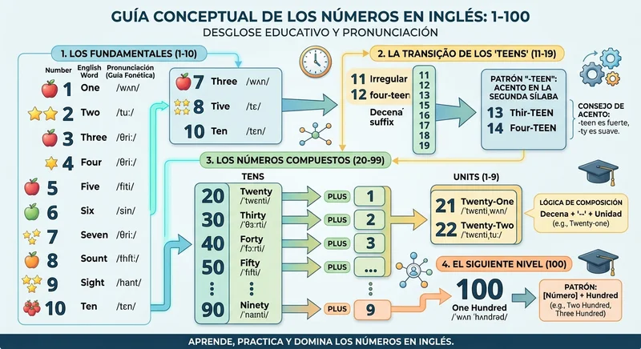

1. Introducción a los números en inglés
Aprender los números cardinales en inglés es uno de los pasos más importantes al iniciar el estudio del idioma. A diferencia del español, donde la morfología numérica posee múltiples excepciones irregulares en sus primeras decenas, el sistema inglés se basa en patrones lógicos muy claros que facilitan su memorización a mediano plazo.
En este artículo analizaremos de forma rigurosa la estructura, la fonética aproximada y las reglas de combinación para dominar los números desde el 1 hasta el 100 sin confusiones.
2. Del 1 al 20: La base fundamental
Los números del 1 al 10 son unidades simples que deben memorizarse de memoria, ya que actúan como cimiento para todo el sistema numérico posterior. Por su parte, los números del 11 al 19 presentan particularidades en su terminación, y el número 20 marca el inicio de las decenas completas.
| Número | Inglés | Pronunciación aproximada |
|---|---|---|
| 1 | one | /uán/ |
| 2 | two | /tú/ |
| 3 | three | /zrii/ |
| 4 | four | /fóor/ |
| 5 | five | /fáiv/ |
| 6 | six | /síks/ |
| 7 | seven | /séven/ |
| 8 | eight | /éit/ |
| 9 | nine | /náin/ |
| 10 | ten | /tén/ |
Los números del 11 al 20
Entre el 11 y el 19 encontramos palabras específicas como eleven y twelve , mientras que del 13 al 19 se utiliza el sufijo -teen , el cual indica que se trata de números de la segunda década (origen histórico de la palabra teenager ).

3. Las decenas y la formación de compuestos
A partir del número 20, las decenas completas se forman utilizando el sufijo -ty (twenty, thirty, forty, fifty, sixty, seventy, eighty, ninety). Es vital diferenciar fonéticamente el acento entre las decenas (-ty) y los números adolescentes (-teen).
Para formar los números compuestos entre el 21 y el 99, simplemente se coloca la decena seguida de un guion y la unidad correspondiente. Por ejemplo: twenty-one (21), forty-five (45) o ninety-nine (99).
Advertencia sobre Errores Comunes
Un error frecuente entre los hablantes de español es intentar traducir literalmente utilizando la conjunción 'y' (como 'veintiuno' en una sola palabra o 'veinte y uno'). En inglés formal escrito, los compuestos del 21 al 99 siempre llevan un guion separador y nunca se conectan con la palabra and en este nivel.
4. Errores comunes de pronunciación
La confusión principal radica en la elevación tonal y la duración de la sílaba en las decenas frente a los números con terminación en -teen . En las decenas (como thirty ), el acento tónico recae firmemente en la primera sílaba. En cambio, en los números como thirteen , la fuerza de la voz se desplaza hacia la segunda sílaba (-teen).
5. Mini-Diálogos Prácticos
A continuación, presentamos algunos intercambios conversacionales cotidianos para ilustrar el uso real de los números en inglés:
Persona A: How many books do you have on the shelf?
(¿Cuántos libros tienes en el estante?)
Persona B: I have forty-five books in total.
(Tengo cuarenta y cinco libros en total.)
Persona A: What is your apartment number?
(¿Cuál es tu número de apartamento?)
Persona B: It is apartment eighty-eight.
(Es el apartamento ochenta y ocho.)
Practicar regularmente mediante la lectura en voz alta de precios, fechas y mediciones consolidará definitivamente el dominio de los números del 1 al 100.